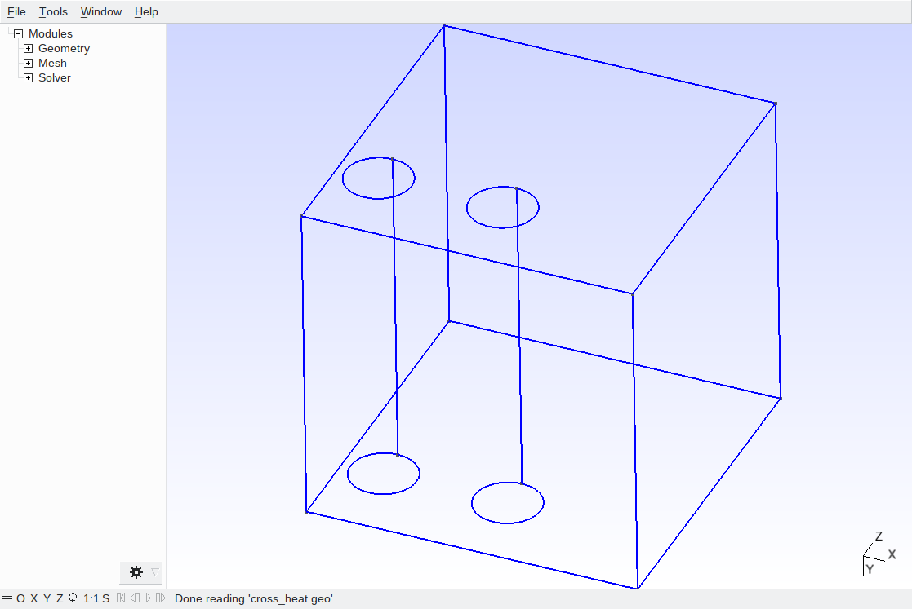
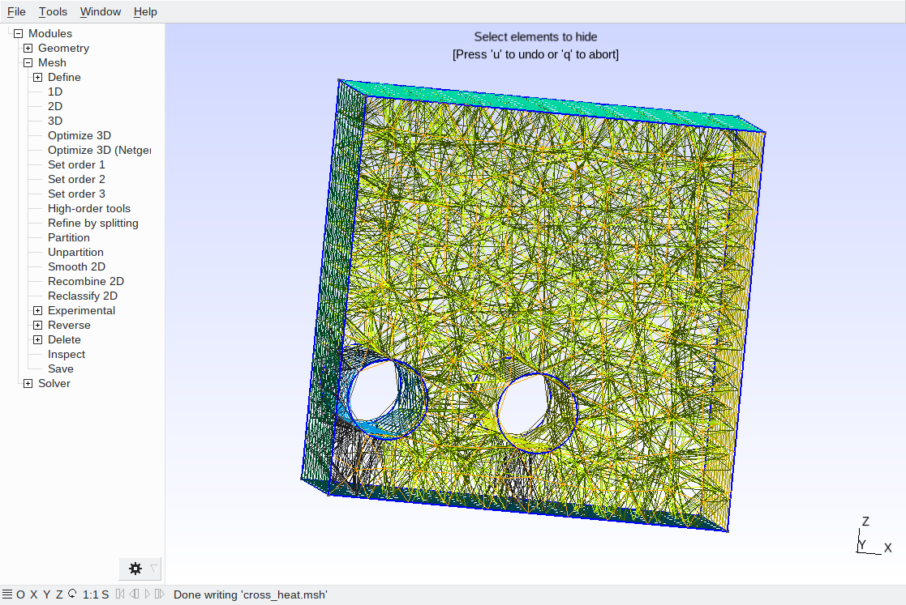
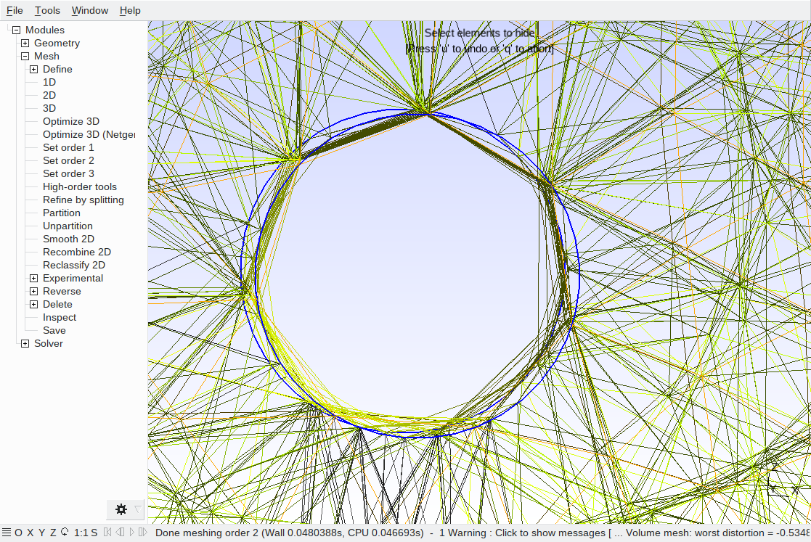
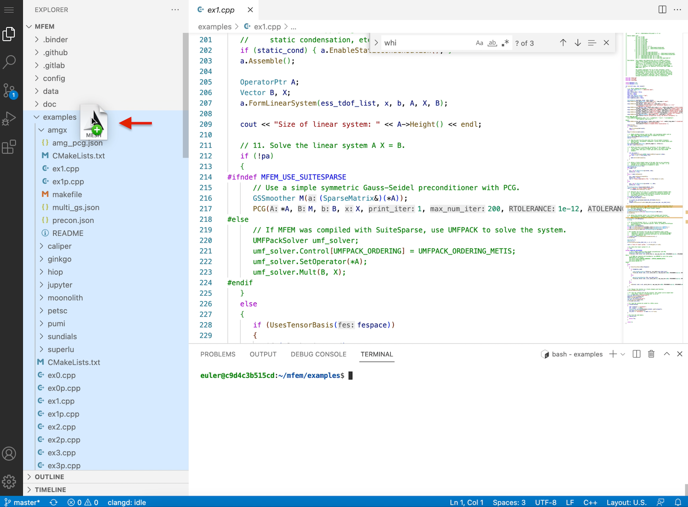
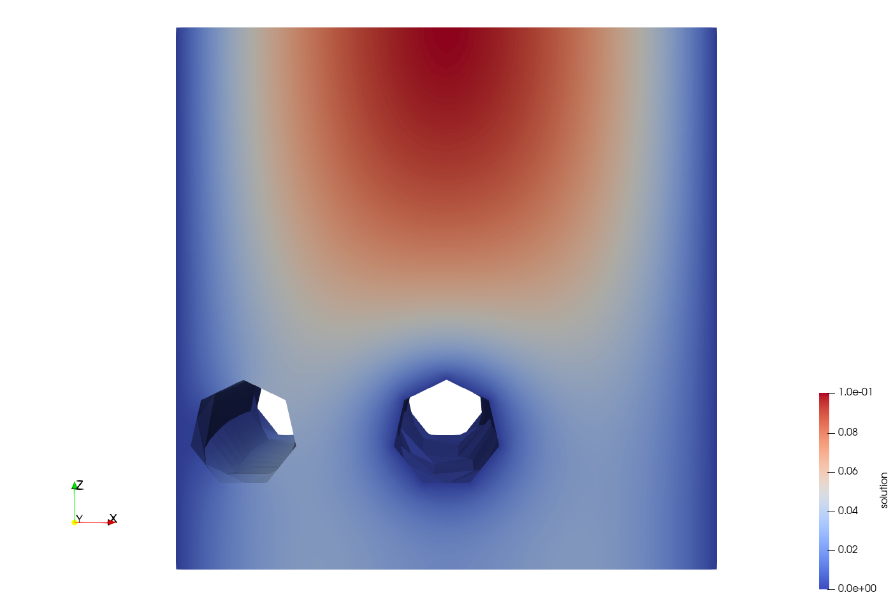
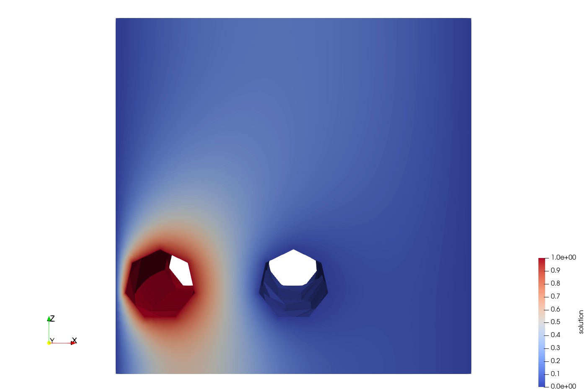
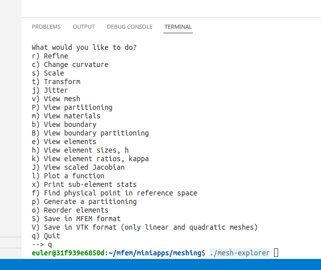
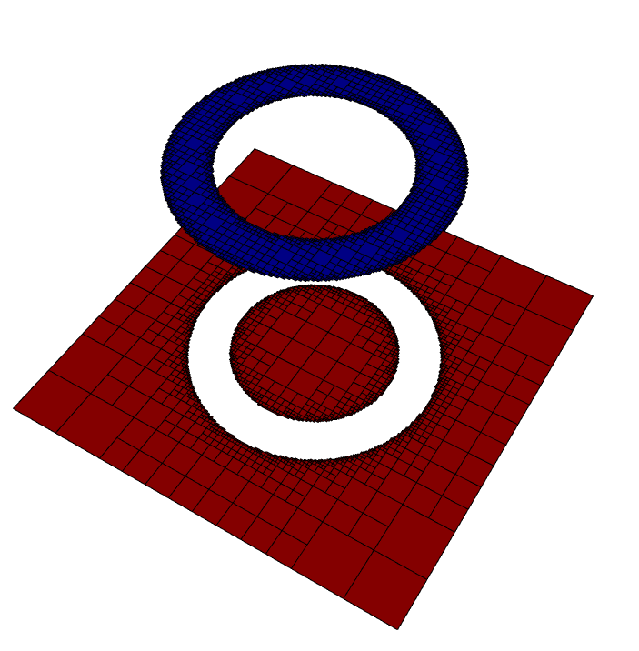
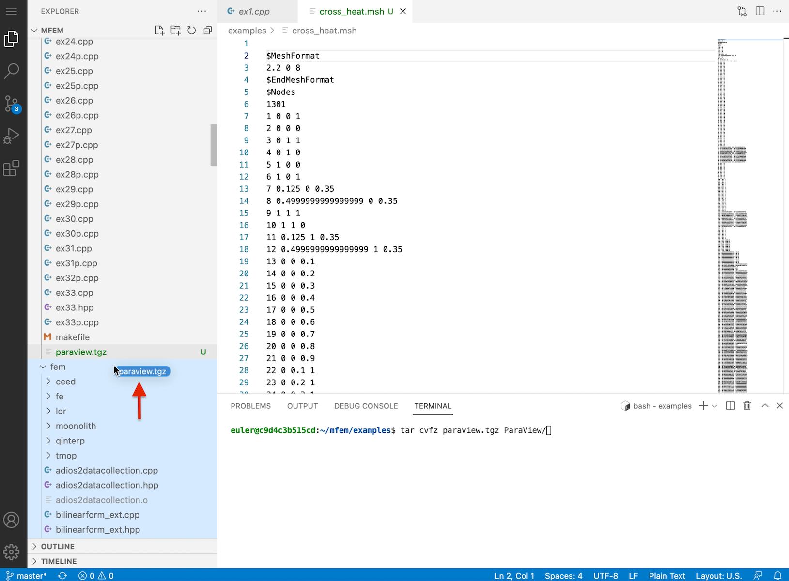
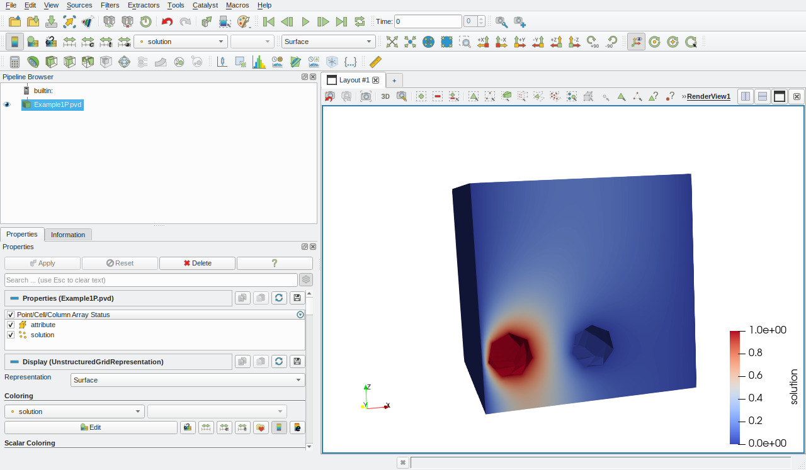

Meshing and Visualization
45 minutes intermediate
Lesson Objectives
Learn about MFEM's internal meshing tools.
Learn about external visualization tools that can be used with MFEM.
Note
Importing meshes from Gmsh and Cubit
In this section we demonstrate the common steps necessary for generating high-quality meshes in Gmsh and Cubit and how to use them in finite element simulations with MFEM.
Gmsh is an open-source, freely available mesh generation tool with built-in computer-aided design (CAD) functionality and a postprocessor. The input to Gmsh can be a simple text file that provides a description of the geometry of the finite element model. The geometry can be generated using the Gmsh graphical user interface (GUI), simple text editors such as Vi/Vim/Emacs, or using more sophisticated CAD tools such as SolidWorks or Autocad. CAD models in IGES or STEP formats can be imported by the CAD engine of Gmsh, meshed, and prepared as inputs to the MFEM examples. Here, however, we focus on simpler examples showing the process of generating meshes suitable for MFEM and not on the actual geometry.
Many examples together with documentation on the input syntax can be found at the Gmsh website. Users familiar with Gmsh can skip the first steps and download already prepared geometries for meshing. If Gmsh is not installed on your local machine, please download it and follow the installation instructions.
We will start with the definitions of a cube with edge length L=1 and two cylinders with a radius L/10 and heights equal to L. The following snippet defines these objects:
SetFactory("OpenCASCADE");
Mesh.Algorithm = 6;
Mesh.CharacteristicLengthMin = 0.1;
Mesh.CharacteristicLengthMax = 0.1;
L=1.0;
Box(1) = {0,0,0,L,L,L};
Rc=L/10;
Cylinder(2) = {L/8, 0.0, L/4, 0, L, 0, Rc , 2*Pi};
Cylinder(3) = {4*L/8, 0.0, L/4, 0, L, 0, Rc , 2*Pi};
Here is a screenshot of the GUI of Gmsh with the generated objects:

The first line in the Gmsh input file defines the geometric engine. Here it is assumed that Gmsh is compiled with CAD support. Such precompiled binaries for Windows, Mac, and Linux can be downloaded from the Gmsh website. The next three lines define the mesh algorithm, which will be used later for generating the mesh and the associated characteristic length scale. Finer or coarser meshes can be obtained by adjusting these numbers. The following line defines a parameter L which is utilized in the definition of the cube. A parameter R defines the radius of the base of the two cylinders. The final geometry, which will be used for simulations, is obtained by subtracting the two cylinders from the cube as:
BooleanDifference(50) = { Volume{1}; Delete; }{ Volume{2,3}; Delete; };
Gmsh uses the obtained geometry for generating the mesh. However, without additional specifications, we cannot impose boundary conditions without any attributes assigned to the boundaries. Different attributes can be assigned to the volumetric part of the mesh for using different material coefficients within the domain. Here, however, we use only a single attribute, as the first example uses only a single diffusion coefficient.
Physical Volume(1) = {50};
Physical Surface(1) = {1,6,8};
Mesh.MshFileVersion = 2.2;
The first line from the above snippet defines physical volume 1 to coincide with the geometry volume 50, which is the final volume obtained by the Boolean operation. The second line defines physical surface 1 to include geometric surfaces {1,6,8}. Finally, the last line specifies the file format. Note that MFEM can only read ASCII Gmsh format version 2.2.


The generated mesh is shown in the figures above. Careful inspection reveals that the cylindrical surface is not represented well by the linear elements. We can improve the representation by refining the mesh. We encourage you to play with the mesh and to generate finer discretizations for the simulations.
You can download the Gmsh input file here and the resulting mesh file here. For users without access to the Gmsh GUI, a mesh can be generated in your local terminal with the following command:
gmsh -3 cross_heat.geo
To run simulations with the generated mesh, drag-and-drop the mesh file from your computer to the AWS browser window in the MFEM examples directory:

To run Example 1 with the newly prepared mesh, be sure you are in the examples directory and then run the following command:
mpirun -np 24 ./ex1p -m cross_heat.msh -no-vis
The solution of the diffusion equation for the generated mesh is shown in the following two pictures. The figures are generated with ParaView, and the process of visualization is explained at the end of this tutorial session.

If we want to enforce Dirichlet boundary conditions different than zero on some other surface, we must export it as a physical surface. For example, to enforce value one on the other cylindrical surface, add the following line to the cross_heat.geo file:
Physical Surface(2) = {7};
The line should be inserted in any place after the definition of geometrical surface 7, e.g., after the Boolean operation defining the final geometry.
If we run ex1.cpp without modifications, a zero value will be assigned to the newly defined surface. Thus, in order to set it to one, modify section 10 in ex1p.cpp:
// 10. Define the solution vector x as a parallel finite element grid
// function corresponding to fespace. Initialize x with initial guess of
// zero, which satisfies the boundary conditions.
ParGridFunction x(&fespace);
x = 0.0;
{
Array<int> ess_bdr(pmesh.bdr_attributes.Max());
ess_bdr = 0;
ess_bdr[1] = 1;
ConstantCoefficient zero(0.0);
Coefficient* coeff[1];
coeff[0]=&one;
x.ProjectBdrCoefficient(coeff,ess_bdr);
}
In the above snippet, we project coefficient one on the degrees of freedom associated with physical surface 2 (the indexing starts at zero). Executing the modified code with the newly created mesh will result in the following solution:

The results can be seen in the GLVis windows as well. However, the users will see only the defined physical surfaces (1,2) and the boundaries between the parallel partitions. Any 2D cuts will work as usual.
MFEM can import meshes saved in Exodus II format generated with Cubit. However, this feature requires compilation of the library with HDF5, NetCDF, and Exodus, which is not available in the AWS tutorial image.
MFEM's meshing tools
MFEM provides many tools, routines, and examples for mesh manipulation. The miniapp examples illustrate a large part of the MFEM functionality in the miniapps/meshing subdirectory. Below we provide more details about only two of these miniapps. However, users are encouraged to also explore the other meshing miniapps.
Mesh Explorer
The mesh explorer miniapp is a handy tool to examine, visualize and manipulate a given mesh. Users have to compile it in the miniapps/meshing subdirectory:
cd ~/mfem/miniapps/meshing
make mesh-explorer
Once compiled, it can be executed in the same directory by typing in the terminal
./mesh-explorer
Before executing it, users should ensure that the GLVis window is open and connected to the AWS machine. Once started, many options will appear in the terminal window. An example screenshot of provided below

By pressing the corresponding keys, a number of operations can be performed on the input mesh files, including:
-
Visualizing of mesh materials with m, and individual mesh elements with e.
-
Mesh refinement with r, scaling with s, randomization with j, and transformation with t.
-
Manipulation of the mesh curvature with c.
-
The ability to simulate parallel partitioning with p.
-
Quantitative and visual reports of mesh quality with x, h and J.
-
Saving the resulting mesh with in MFEM or VTK format with S and V.
For example, selecting v in the prompt and pressing enter will display the default mesh of a hex-meshed beam in the GLVis window. To operate on a different mesh, users should exit the miniapp with q and start it again with the following line
./mesh-explorer -m new_mesh_file.msh
Here new_mesh_file.msh is the mesh file selected by the user. The input mesh can be in any format supported by MFEM. In addition, the miniapp can save the loaded mesh in native MFEM and VTK formats.
Shaper
Shaper is a miniapp that performs multiple levels of adaptive mesh refinement to resolve the interfaces between different "materials" in the mesh, as specified by a given material function. It can be used as a simple initial mesh generator, for example in the case when the interface is too complex to describe without local refinement. Both conforming and non-conforming refinements are supported.
To experiment with it, go to the miniapps/meshing subdirectory and type:
cd ~/mfem/miniapps/meshing
make shaper
./shaper
The result of the execution with five levels of refinement and default setting can be seen in the following screenshot.

Users can specify different material distributions by modifying the function
int material(Vector &x, Vector &xmin, Vector &xmax)
in the beginning of shaper.cpp.
The current function returns integer values of 1 if a point is located within a simple annulus/shell with a relative inner radius of 0.4 and outer radius of 0.6 and 2 otherwise. The coordinates of a point within the mesh are mapped to values between minus one and one.
Users are encouraged to modify the material distribution function and use different meshes as input. The refinement level is controlled in the terminal by pressing y for further refinement or n for completing the run. The resulting mesh is written in a file shaper.mesh. Once the mesh is written, users can use it as an input to other examples or miniapps.
Visualizing results in ParaView and VisIt
To save the simulation results from the parallel version of Example 1 (ex1p.cpp) in ParaView format, add the following lines just before step 17 in the file.
{
ParaViewDataCollection *pd = NULL;
pd = new ParaViewDataCollection("Example1P", &pmesh);
pd->SetPrefixPath("ParaView");
pd->RegisterField("solution", &x);
pd->SetLevelsOfDetail(order);
pd->SetDataFormat(VTKFormat::BINARY);
pd->SetHighOrderOutput(true);
pd->SetCycle(0);
pd->SetTime(0.0);
pd->Save();
delete pd;
}
The first line defines a ParaViewDataCollection for saving data in ParaView data format. The following two lines define the name of the data collection and the prefix path, which is set to ParaView. Thus, the data set will be written in the directory ParaView relative to the current execution path. The following line registers the ParGridFunction x in the data collection. The remaining lines set different parameters for the format and the data set, and finally, the set is saved and deleted. See MFEM documentation for more detailed information about ParaView.
Compile and execute the modified example.
To download the results saved in ParaView format to your local machine, compress and gather all files in a single archive with the following command:
tar cvfz paraview.tgz ParaView/
which will generate the file paraview.tgz in the current directory.
Download the file to your local machine by dragging it from the Explorer window:

Then go to the download location and extract the archive with
tar vxfz paraview.tgz ParaView/
The above assumes a UNIX type of environment. Windows users could use the GUI or WSL/WSL2 engines.
ParaView can be freely downloaded both as a source code or precompiled binaries. The precompiled binaries are available for Linux, macOS, and Windows. Please follow the instructions for the corresponding operating system for installation instructions.
To visualize the downloaded simulation data, run ParaView and open the file Example1P.pvd in the ParaView/Example1P directory, where the path is relative to the directory where the archive was downloaded. Next, click on the Apply button and select Solution in the drop-down menu in the second row of buttons. The geometry, together with the solution, can be rotated on the screen by holding and dragging the mouse.

Replacing ParaviewDataCollection with VisItDataCollection allows you to write data in VisIt data format. VisIt can be freely downloaded and installed on Linux, macOS, and Windows and provides another alternative to ParaView. The steps for downloading and the simulation data are the same as the steps outlined above for ParaView.
Questions?
Next Steps
Back to the MFEM tutorial page